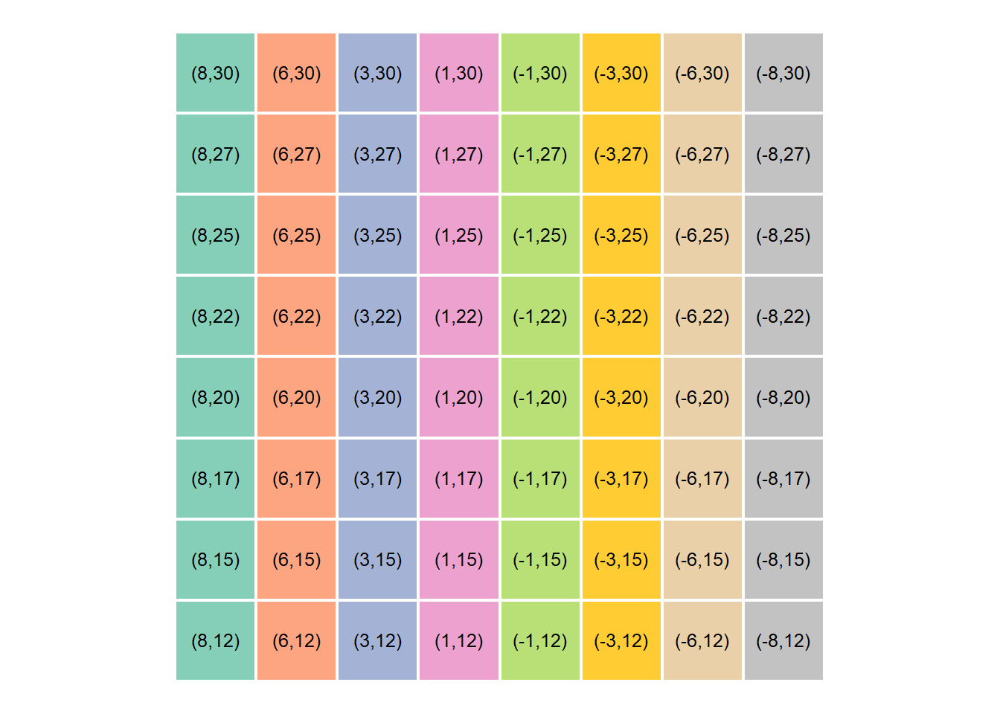

Once the centroid pixel coordinates were successfully extracted, the next step involved translating them to their corresponding real-world x-y coordinates in cm. This scaling from pixel values to cm values was achieved by the mapping function or simply using scales::rescale():
# Mapping functionmap_fun<-function(value, from_low, from_high, to_low, to_high){mapped_val=(value-from_low)*(to_high-to_low)/(from_high-from_low)+(to_low)return(mapped_val)}# Map virtual board coordinates to manipulator workspacecentroids=centroids%>%# mutate(x_mapped = map_fun(centroidx, from_low = 0, from_high = dim_x, to_low = 9, to_high = -9),# y_mapped = map_fun(centroidy, from_low = 0, from_high = 192, to_low = 11, to_high = 17)) %>% ## Using scales::rescalemutate(x_mapped =scales::rescale(centroidx, to =c(9, -9), from =c(0, 640)), y_mapped =scales::rescale(centroidy, to =c(11, 17), from =c(0, 192)))%>%mutate(across(where(is.numeric), round))%>%# Rearrange board positions to match our physical chess boardmutate( pl =rep(LETTERS[1:8], times =nrow(centroids)/8), pn =rep(1:8, each =nrow(centroids)/8), pos =paste(pl, pn, sep =""))%>%select(-c(pl, pn))# View centroids coordinatescentroids%>%slice_head(n =10)
# Virtual coordinates on boardcentroids%>%ggplot(mapping =aes(x =centroidx*2, y =centroidy*2))+geom_tile(aes(fill =str_extract(pos, "[:alpha:]")), color ="white", alpha =0.8, size =0.8, show.legend =FALSE)+geom_text(aes(x =centroidx*2, y =centroidy*2+2, label =paste("(", centroidx, ",", centroidy, ")", sep ="")), color ="black", size =3.3)+coord_equal()+#paletteer::scale_fill_paletteer_d("RColorBrewer::Set2") +scale_fill_manual(values =paletteer::paletteer_d("RColorBrewer::Set2")%>%paste()%>%str_replace("#FFD92FFF", "#FFC000FF"))
# Real world coordinates on boardcentroids%>%ggplot(mapping =aes(x =centroidx*2, y =centroidy*2))+geom_tile(aes(fill =str_extract(pos, "[:alpha:]")), color ="white", alpha =0.8, size =0.8, show.legend =FALSE)+geom_text(aes(x =centroidx*2, y =centroidy*2+2, label =paste("(", x_mapped, ",", y_mapped, ")", sep ="")), color ="black", size =3.3)+coord_equal()+#paletteer::scale_fill_paletteer_d("RColorBrewer::Set2") +scale_fill_manual(values =paletteer::paletteer_d("RColorBrewer::Set2")%>%paste()%>%str_replace("#FFD92FFF", "#FFC000FF"))

Here’s an example of how we would extract the real word coordinates from the tibble:
# Function to return mapped values from tibbleget_centroid<-function(position){x=centroids%>%filter(str_detect(pos, position))%>%pull(x_mapped)y=centroids%>%filter(str_detect(pos, position))%>%pull(y_mapped)return(c(x, y))}# Define initial and final positionsinitial_pos<-"B2"final_pos<-"G2"get_centroid(position =initial_pos)
[1] 6 15
get_centroid(position =final_pos)
[1] -6 15
3.4 Summary
This is the approach we took at this step. We created a virtual board and then translated virtual coordinates to the manipulator’s workspace.
And with that, this section is done! Please do feel free to reach out in case of any questions, feedback and suggestions.
---title: "Board mapping"author: "Eric Wanjau and Ian Muchiri"toc: truetoc-location: leftformat: html: number-sections: true html-math-method: katex code-tools: true code-fold: false code-link: trueeditor: visualexecute: eval: true warning: false message: false---This notebook illustrates how we assigned real world board coordinates (cm) to each square box on the chess board.The approach was quite straightforward. We created a virtual board and then translated virtual coordinates to the manipulator's workspace.## Creating virtual chessboard.```{r}library(here)library(waffle)library(patchwork)library(magick)library(tidyverse)# Vectorx <-c(A=1, B =1, C =1, D =1, E =1, F =1, G =1)y <-c(A=1, B =1, C =1, D =1, E =1, F =1, G =1)# Create checker boxesw1 =waffle(x, rows =8, flip =TRUE, colors =c("black", "white", "black", "white", "black", "white", "black", "white"), legend_pos ="", , size =0.1) +theme(plot.margin =margin(0, 0, 0, 0))w2 =waffle(y, rows =8, flip =TRUE, colors =c("white", "black", "white", "black", "white", "black", "white", "black"), legend_pos ="", size =0.1) +theme(plot.margin =margin(0, 0, 0, 0))# Make checker boardcheckerboard <- w1 / w2 / w1 / w2 / w1 / w2 / w1 / w2checkerboardggsave("images/checkerboard.png", width =7, height =7)```## Convert image into a tibble```{r}library(magick)img <-image_read("images/checkerboard.png") %>%image_convert(type ="grayscale")# Dimensions of virtual boarddim_x =160*4dim_y =160*4img <-image_resize(img, paste(dim_x, dim_y, sep ="x"))# Create row and column identifiersrow_names <-tibble(x =1:dim_x, y =rep(LETTERS[1:8], each = dim_y/8), z =paste(x, "_", y, sep ="")) %>%pull(z)col_names <-tibble(x =1:dim_x, y =rep(1:8, each = dim_x/8), z =paste(x, "_", y, sep ="")) %>%pull(z)# Create array and number rows and columnsimg_array <-drop(as.integer(pluck(img, 1)))rownames(img_array) <- row_namescolnames(img_array) <- col_names# Create data frame from array and rename columnimg_dfx <- img_array %>%as_tibble() %>%mutate(y = row_names) %>%#rowid_to_column(var = "y") %>% pivot_longer(!y, names_to ="x", values_to ="pv") %>%mutate(pv = scales::rescale(pv, to =c(0, 1))) %>%# binarize imagemutate(pv =case_when( pv >0.5~1,TRUE~0)) %>%separate(y, c("y", "pl")) %>%separate(x, c("x", "pn")) %>%mutate(pos =paste(pl, pn, sep ="")) %>%select(-c(pn, pl)) %>%mutate(across(c(y, x, pv), as.numeric)) %>%group_by(pos) %>%mutate(centroidx =round(mean(x)), centroidy =round(mean(y))) %>%ungroup()```Only centroid locations are of importance. So we narrow down to that:```{r}# Obtain location centroidscentroids <- img_dfx %>%ungroup() %>%distinct(pos, centroidx, centroidy)# View centroids on the virtual boardcentroids %>%slice_head(n =10)```## Mapping coordinates to xyOnce the centroid pixel coordinates were successfully extracted, the next step involved translating them to their corresponding real-world x-y coordinates in cm. This scaling from pixel values to cm values was achieved by the mapping function or simply using `scales::rescale()`:```{r}# Mapping functionmap_fun <-function(value, from_low, from_high, to_low, to_high){ mapped_val = (value - from_low) * (to_high - to_low) / (from_high - from_low) + (to_low)return(mapped_val)}# Map virtual board coordinates to manipulator workspacecentroids = centroids %>%# mutate(x_mapped = map_fun(centroidx, from_low = 0, from_high = dim_x, to_low = 9, to_high = -9),# y_mapped = map_fun(centroidy, from_low = 0, from_high = 192, to_low = 11, to_high = 17)) %>% ## Using scales::rescalemutate(x_mapped = scales::rescale(centroidx, to =c(9, -9), from =c(0, 640)),y_mapped = scales::rescale(centroidy, to =c(11, 17), from =c(0, 192))) %>%mutate(across(where(is.numeric), round)) %>%# Rearrange board positions to match our physical chess boardmutate(pl =rep(LETTERS[1:8], times =nrow(centroids)/8),pn =rep(1:8, each =nrow(centroids)/8),pos =paste(pl, pn, sep ="")) %>%select(-c(pl, pn))# View centroids coordinatescentroids %>%slice_head(n =10)```Now let's visualize our handy work:```{r}theme_set(theme_void())# Create virtual boardcentroids %>%ggplot(mapping =aes(x = centroidx*2, y = centroidy*2)) +geom_tile(aes(fill =str_extract(pos, "[:alpha:]")), color ="white", alpha =0.8, size =0.8, show.legend =FALSE) +geom_text(aes(x = centroidx*2, y = centroidy*2+2, label = pos), color ="black", size =3.5) +coord_equal() +#paletteer::scale_fill_paletteer_d("RColorBrewer::Set2") +scale_fill_manual(values = paletteer::paletteer_d("RColorBrewer::Set2") %>%paste() %>%str_replace("#FFD92FFF", "#FFC000FF"))# Virtual coordinates on boardcentroids %>%ggplot(mapping =aes(x = centroidx*2, y = centroidy*2)) +geom_tile(aes(fill =str_extract(pos, "[:alpha:]")), color ="white", alpha =0.8, size =0.8, show.legend =FALSE) +geom_text(aes(x = centroidx*2, y = centroidy*2+2, label =paste("(", centroidx, ",", centroidy, ")", sep ="")), color ="black", size =3.3) +coord_equal() +#paletteer::scale_fill_paletteer_d("RColorBrewer::Set2") +scale_fill_manual(values = paletteer::paletteer_d("RColorBrewer::Set2") %>%paste() %>%str_replace("#FFD92FFF", "#FFC000FF"))# Real world coordinates on boardcentroids %>%ggplot(mapping =aes(x = centroidx*2, y = centroidy*2)) +geom_tile(aes(fill =str_extract(pos, "[:alpha:]")), color ="white", alpha =0.8, size =0.8, show.legend =FALSE) +geom_text(aes(x = centroidx*2, y = centroidy*2+2, label =paste("(", x_mapped, ",", y_mapped, ")", sep ="")), color ="black", size =3.3) +coord_equal() +#paletteer::scale_fill_paletteer_d("RColorBrewer::Set2") +scale_fill_manual(values = paletteer::paletteer_d("RColorBrewer::Set2") %>%paste() %>%str_replace("#FFD92FFF", "#FFC000FF"))```Here's an example of how we would extract the real word coordinates from the tibble:```{r}# Function to return mapped values from tibbleget_centroid <-function(position){ x = centroids %>%filter(str_detect(pos, position)) %>%pull(x_mapped) y = centroids %>%filter(str_detect(pos, position)) %>%pull(y_mapped)return(c(x, y))}# Define initial and final positionsinitial_pos <-"B2"final_pos <-"G2"get_centroid(position = initial_pos)get_centroid(position = final_pos)```## SummaryThis is the approach we took at this step. We created a virtual board and then translated virtual coordinates to the manipulator's workspace.And with that, this section is done! Please do feel free to reach out in case of any questions, feedback and suggestions.Happy Learning,[Eric](https://twitter.com/ericntay).